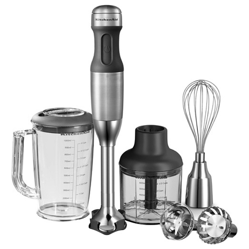

Погружной блендер BORK B781 VS KitchenAid 5KHB2571
Современная техника отличается от ретро тем, что экономит самое ценное на сегодняшний день – время. Ретро дизайн - это на любителя, а вот ретро технологии это вчерашний, а быть может и позавчерашний день.
KitchenAid 5KHB2571
Преимущества KitchenAid, которые пытаются продать:
- Дизайн и выбор цветов
- Компания, которая изобрела миксеры 1919 год
- KitchenAid переводится как кухонный помощник
Характеристики KitchenAid:
- Потребляемая мощность: 180 Вт
- Вес: 1,1 кг
- Ёмкость измельчителя: 600 мл
- Ёмкость кувшина: 1 л
- Длинна шнура: 1,5 м
- Количество оборотов: 6100-11000 об/мин
- Двигатель: DC
- Страна производитель: КНР
Преимущества блендера BORK B781:
- Высокая скорость вращения ножей 20 000 об/мин позволяет добиваться тонкой и равномерной текстуры продукта. ( у KitchenAid максимальная скорость 11 000 об/мин)
- Инновационный двигатель разработан лучшими инженерами и произведен на заводе в Швейцарии, устраняет вибрацию и делает процесс взбивания практически бесшумным
- Универсальный 3D нож идеально смешивает и измельчает как самые плотные, так и самые воздушные продукты
- Монолитный корпус позволяет погружать блендер в глубокую посуду до 25 см. (у KitchenAid глубина 20 см, для удлинения необходимо использовать дополнительную насадку)
- Цельнометаллический корпус обеспечивает долговечность и придает блендеру уникальный внешний вид. Позволяет мыть рабочую часть под струей воды
- Запатентованная форма основания ножки блендера создает циклон в посуде, что позволяет измельчать и перемешивать продукт не перемещая блендер
- Насадка от разбрызгивания позволяет измельчать небольшие количества продукта в любой посуде
- Витой шнур растягивается до 2 метров, при этом не путается и не мешает в работе. (у KitchenAid шнур 1,5 м)
- Комплект насадок, состоящий из насадки для взбивания, ножа для измельчения и насадки от разбрызгивания, позволяет взбивать легкие и воздушные смеси, делать пюре, измельчать овощи и фрукты, взбивать яичный белок и многое-многое другое
- Неразборный металлический привод обеспечивает надежность и долговечность прибора. (у KitchenAid ножка блендера крепится поворотным механизмом)
- Страна производства Швейцария
Покупая KitchenAid, вы покупаете не только ретро дизайн, но и ретро технологии.